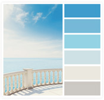

【郑重申明】本站只提供静态模板下载！

本站郑重申明只提供静态模板下载，拒绝伸手党！本站所有能提供的模板均已发布，喜欢就下载！下载是干嘛的？！学习参考！初衷就是让更多喜欢web设计的新手能从中找到乐趣，以及开发设计更多更好的模板！...
- 学习笔记
- 2015-02-14
- 9已阅读
【匆匆那些年】总结个人博客经历的这四年…

博客从最初的域名购买，到上线已经有四年的时间了，这四年的时间，有笑过，有怨过，有悔过，有执着过，也有放弃过…但最后还是坚持了下来，时间如此匆匆，等再回过头已来不及去弥补...
- 学习笔记
- 2015-01-09
- 14已阅读
分享我的个人博客访问量如何做到IP从10到2000的(图文)
我的个人博客总共展示了三个版本，界面也经历了由“简单”到“复杂”再到“简单”，颜色从“色泽单一”到“五彩斑斓”再到“局部点缀”的过程。原来一年一个版本！而每次改版的契机都是被百度惩罚！界面不要频繁更换！好好检查代码，有没有冗余、结构有没有不合理的地方。...
- 学习笔记
- 2014-11-06
- 17已阅读
帝国cms常用标签调用方法总结（不得不收藏哦）

整理了一些常用的帝国cms调用，灵动标签和万能标签的调用方法举例。幻灯片、标题、一级栏目、二级栏目、带模版的友情链接（下拉菜单）、判断内容页字段为空时是如何调用的等等...新手可以借鉴学习。...
- 学习笔记
- 2014-10-18
- 16已阅读
使用ASPCMS建站网站被黑

之前使用过aspcms建站，都使用的是最新发布的版本，时隔半年，竟然以将近每个月升一次的速度更新了n个版本。当然是一次比一次好，但是之前的版本，升级又非常麻烦，暂且就先没管。...
- 学习笔记
- 2014-06-17
- 10已阅读
IE6到底哪里不好？你还继续用IE6吗？

初接触网页设计，IE6是检查代码严谨性的一个很好的工具，虽然，曾经无数的抱怨、甚至憎恨。但是只要100个用户群里面有一位用户在使用IE6，你就不得不做好兼容。因为我们就是设计师。...
- 学习笔记
- 2014-05-26
- 17已阅读
css技巧以及经验总结

1、如何清除图片下方出现几像素的空白间隙？2、如何让文本垂直对齐文本输入框？3、如何让单行文本在容器内垂直居中？4、如何让超链接访问后和访问前的颜色不同且访问后仍保留hover和active效果？...
- 学习笔记
- 2014-05-14
- 12已阅读
IE常见bugs以及解决方案列表

1、如何解决IE6及更早浏览器浮动时产生双倍边距的BUG？2、如何解决IE6及更早浏览器下的3像素BUG？3、如何在IE6及更早浏览器下模拟min-height效果？4、如何解决IE7及更早浏览器下当li中出现2个或以上的浮动时，li之间产生的空白间隙的BUG？...
- 学习笔记
- 2014-05-14
- 11已阅读
鼠标悬停图片、文字css3效果

其实这样的效果也很常见，但是我平时用到很少，在其他网站看到这样的效果，第一反应就是查看源代码，看他怎么运用的，结果用了很多的div，最主要的是用js来实现。目前很多浏览器也都兼容css3新属性，这个例子就可以使用rgba(0,0,0,0.5)、opacity、当然关键也要看怎么定位，还是会用到position属性。...
- 学习笔记
- 2014-01-14
- 27已阅读
从摄影作品中获取网页颜色搭配技巧
作为一个优秀、专业的网页设计师，首先要了解各种颜色的象征，以及不同类型网站常用的色彩搭配。色彩搭配看似复杂,但并不神秘。一般来说,网页的背景色应该柔和一些、素一些、淡一些,再配上深色的文字,使人看起来自然、舒畅。色彩是人的视觉最敏感的东西。主页的色彩处理得好，可以锦上添花，达到事半功倍的效果。...
- 学习笔记
- 2014-01-09
- 12已阅读
我们可以从CSS框架中借鉴到什么
现在很多人会使用 CSS 框架进行快速建站。那 CSS 框架是什么呢，它通常是一些 CSS 文件的集合，这些文件包括基本布局、表单样式、网格、简单组件、以及样式重置。使用 CSS 框架大大降低工作成本进行快速建站。...
- 学习笔记
- 2013-11-04
- 24已阅读